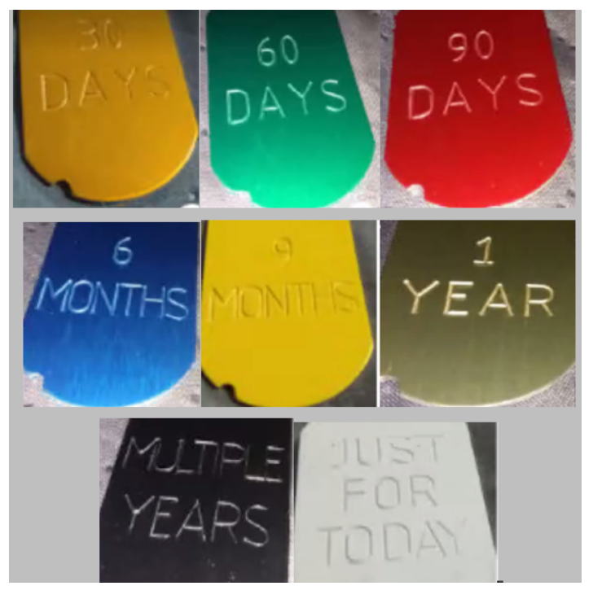

Draft text: Presented as provided for reading, study, and meeting use.
Limited Public Domain Literature Disclaimer
This is free literature released into limited public domain.
Anyone is free to copy, publish, use, compile, distribute this literature, by any means, with the following exceptions: a) Only Narcotics Anonymous Home Groups may modify it; b) No one may profit from the sale or distribution of this literature; c) Only Narcotics Anonymous Home Groups may sell this literature; d) All sales by Narcotics Anonymous Home Groups must be at or below their actual cost, which ought never include “man hours” or “volunteer hours” but should be limited to the actual cost of printing and shipping; e) The rights of Narcotics Anonymous Home Groups under this release shall never be delegated to any service body or entity outside the actual Home Groups, NA related or otherwise. f) Any entity whose regular business is the printing and/or binding of books, pamphlets, etc. may charge a fair and reasonable fair market price for the production of this literature for groups and individuals intending to distribute it in accordance with these terms, so long as said entity never acts in the capacity of publisher or distributor of this literature. Drop-shipping orders to legitimate distributors acting in accordance with this release is permissible.
In jurisdictions that recognize copyright laws, the author or authors of this literature dedicate limited copyright interest to the public domain in accordance with these terms. We make this dedication for the benefit of the still-suffering addict and public at large and to the detriment of our heirs and successors. We intend this dedication to be an overt act of relinquishment in perpetuity of all present and future monetary rights to this literature under copyright law.
THE LITERATURE IS PROVIDED WITHOUT WARRANTY OF ANY KIND, EXPRESS OR IMPLIED. IN NO EVENT SHALL THE AUTHORS BE LIABLE FOR ANY CLAIM, DAMAGES OR OTHER LIABILITY, WHETHER IN AN ACTION OF CONTRACT, TORT OR OTHERWISE, ARISING FROM, OUT OF OR IN CONNECTION WITH THE THE USE OF THIS LITERATURE BY ANY ENTITY WITH REGARD TO ITS APPLICATION, BE IT IN THE FIELD OF RECOVERY FROM ADDICTION OR OTHERWISE.
Who Is an Addict?Page 1 of 12
WHO IS AN ADDICT?
Most of us do not have to think twice about this question. WE KNOW! Our whole life and thinking was centered in drugs in one form or another, the getting and using and finding ways and means to get more. We lived to use and used to live. Very simply, an addict is a man or woman whose life is controlled by drugs in some way. We are people in the grip of a continuing and progressive illness whose ends are always the same: jails, institutions and death.
WHAT IS THE NARCOTICS ANONYMOUS PROGRAM?
N.A. is a non-profit Fellowship or society of men and women for whom drugs had become a major problem. We are recovering addicts who meet regularly to help each other stay clean. This is a program of complete abstinence from all drugs. There is only “ONE” requirement for membership, the desire to stop using. There are no musts in NA but we suggest that you keep an open mind and give yourself a break. Our program is a set of principles written so simply, that we can follow them in our daily lives. The most important thing about them is that THEY WORK. There are no strings attached to N.A. We are not affiliated with any other organizations, we have no leaders, no initiation fees or dues, no pledges to sign, no promises to make to anyone. We are not connected with any political, religious or law enforcement groups, and are under no surveillance at any time. Anyone may join us, regardless of age, race, color, creed, religion, lack of religion, or sexual identity. We are not interested in what or how much you used or who your connections were, what you have done in the past, how much or how little you have, but only in what you want to do about your
Why Are We Here?Page 2 of 12
problem and how we can help. The newcomer is the most important person at any meeting, because we can only keep what we have by giving it away. We have learned from our group experience that those who keep coming to our meetings regularly stay clean.
WHY ARE WE HERE?
Before coming to the world wide Fellowship of N.A., we could not manage our own lives. We could not live and enjoy life as other people do. We had to have something different and we thought we had found it in drugs. We placed their use ahead of the welfare of our families, our wives, husbands, and our children. We had to have drugs at all costs. We did many people great harm, but most of all we harmed ourselves. Through our inability to accept personal responsibilities we were actually creating our own problem. We seemed to be incapable of facing life on its own terms. Most of us realized that in our addiction we were slowly committing suicide, but addiction is such a cunning enemy of life that we had lost the power to do anything about it. Jails did not help us at all. Medicine, religion and psychiatry seemed to have no answers for us that we could use. All these methods having failed us, in desperation, we sought help from each other in Narcotics Anonymous. After coming to N.A. we realized we were sick people who suffered from a disease like Diabetes. There is no known “cure” for this – all though it can be arrested at some point and “recovery” is then possible. Narcotics Anonymous has many years of experience with many thousands of addicts. This mass of intensive first-hand
How It WorksPage 3 of 12
experience is of unparalleled therapeutic value. We are here to share freely with any addict who wants recovery.
HOW IT WORKS
If you want what we have to offer, and are willing to make the effort to get it, then you are ready to take certain steps. These suggested steps are the principles that made our recovery possible.
1.We admitted that we were powerless over our addiction, that our lives had become unmanageable.
2.We came to believe that a Power greater than ourselves could restore us to sanity.
3.We made a decision to turn our will and our lives over to the care of God as we understood Her.
4.We made a searching and fearless moral inventory of ourselves.
5.We admitted to God, to ourselves, and to another human being the exact nature of our wrongs.
6.We were entirely ready to have God remove all these defects of character.
7.We humbly asked Her to remove our shortcomings.
8.We made a list of all persons we had harmed, and became willing to make amends to them all.
9.We made direct amends to such people wherever possible, except when to do so would injure them or others.
10.We continued to take personal inventory, and when we were wrong promptly admitted it.
11.We sought through prayer and meditation to improve our conscious contact with God as we understood Her, praying only for knowledge of Her will for us and the power to carry that out.
How It Works — ContinuedPage 4 of 12
12.Having had a spiritual awakening as a result of these steps, we tried to carry this message to addicts, and to practice these principles in all our affairs.
This sounds like a big order, and we can't do it all at once. We didn't become addicted in one day, so remember - EASY DOES IT. There is one thing more than anything else that will defeat us in our recovery; this is an attitude of indifference or intolerance toward spiritual principles. Although there are no musts in N.A., there are three things that seem indispensable. These are honesty, open-mindedness, and willingness to try. With these we are well on our way. We feel that our approach to the disease of addiction is completely realistic, for the therapeutic value of one addict helping another is without parallel. We feel that our way is practical, for one addict can best understand and help another addict. We believe that the sooner we face our problems within our society, in everyday living, just that much faster do we become acceptable, responsible, and productive members of that society. The only way to keep from returning to active addiction is not to take that first drug. If you are like us you know that one is too many and a thousand never enough. We put great emphasis on this, for we know that when we use drugs in any form, or substitute one for another, we release our addiction all over again. The substitution of one drug for another has caused a great many addicts to relapse. Before we came to N.A., many of us viewed alcohol separately, but we cannot afford to be confused about this. Alcohol is a drug. We are people with the disease of addiction who must abstain from all drugs in order to recover.
What Can I Do? / Twelve TraditionsPage 5 of 12
WHAT CAN I DO?
Begin your own program by taking Step One from the previous chapter, "How It Works". When we fully concede to our innermost selves that we are powerless over our addiction, we have taken a big step in our recovery. Many of us have had some reservations at this point, so give yourself a break and be as thorough as possible from the start. Go on to Step Two, and so forth, and as you go on you will come to an understanding of the program for yourself. If you are in an institution of any kind and have gone through complete withdrawal and have stopped using for the present, you can with a clear mind try this way of life. Upon release, continue your daily program and contact a member of N.A. Do this by mail, by phone, or in person. Better yet, come to our meetings. Here you will find answers to some of the things that may be disturbing you now. If you are not in an institution, the same holds true. Stop using for today. Most of us can do for eight or twelve hours what seems impossible for a longer period of time. If the compulsion or desire to use becomes too great, put yourself on a five minute basis of not using. Minutes will grow to hours, and hours to days, so you will break the habit and gain some peace of mind. The real miracle happens when you realize that the need for drugs has in some way been lifted from you. You have stopped using and started to live.
THE TWELVE TRADITIONS OF N.A.
We keep what we have only with vigilance, and just as freedom for the individual comes from the Twelve Steps, so freedom for the group springs from our Traditions.
Twelve Traditions — ContinuedPage 6 of 12
As long as the ties that bind us together are stronger than those that would tear us apart, all will be well.
1.Our common welfare should come first; personal recovery depends on N.A. unity.
2.For our group purpose there is but one ultimate authority— a loving God as She may express Herself in our group conscience.
Our leaders are but trusted servants; they do not govern.
3.The only requirement for membership is a desire to stop using.
4.Each group should be autonomous except in matters affecting other groups or N.A. as a whole.
5.Each group has but one primary purpose—to carry the message to the addict who still suffers.
6.An N.A. group ought never endorse, finance, or lend the N.A. name to any related facility or outside enterprise, lest problems of money, property or prestige divert us from our primary purpose.
7.Every N.A. group ought to be fully self-supporting, declining outside contributions.
8. Narcotics Anonymous should remain forever nonprofessional, but our service centers may employ special workers.
9.N.A., as such, ought never be organized, but we may create service boards or committees directly responsible to those they serve.
10.Narcotics Anonymous has no opinion on outside issues; hence the N.A. name ought never be drawn into public controversy.
11.Our public relations policy is based on attraction rather than promotion; we need always maintain personal anonymity at the level of press, radio, and films.
Twelve Traditions — ConclusionPage 7 of 12
12.Anonymity is the spiritual foundation of all our Traditions, ever reminding us to place principles before personalities.
Understanding these Traditions comes slowly over a period of time. We pick up information as we talk to members and visit various groups. It usually isn't until we get involved with service that someone points out that "personal recovery depends on N.A. unity", and that unity depends on how well we follow our Traditions. Because we hear about "suggested steps" and "no musts" so often, some of us make a mistake and assume that this applies to groups the way it applies to the individual. The Twelve Traditions of N.A. are not negotiable. They are the guidelines that keep our fellowship alive and free. By following these guidelines in our dealings with others and society at large, we avoid many problems. That is not to say our Traditions eliminate them all. We still have to face difficulties as they arise: communication problems, differences of opinion, internal controversies, and troubles with individuals and groups outside the fellowship. However, when we apply these principles, we avoid some of the pitfalls. Many of our problems are like those our predecessors had to face. Their hard-won experience gave birth to the Traditions, and our own experience has shown that these principles are just as valid today as they were when these Traditions were formulated. Our Traditions protect us from the internal and external forces which could destroy us. They are truly the ties that bind us together. It is only through understanding and application that they work.
Recovery and RelapsePage 8 of 12
RECOVERY AND RELAPSE
Many consider continuous abstinence and recovery as noteworthy and therefore synonymous while relapsers are sort of pushed aside or worse yet used as statistics that in no way give a true picture of the possibility for recovery. A relapse and sometimes subsequent death of someone close to us can do the job of awakening us to the necessity of vigorous personal action. Although all addicts are basically the same in kind, we do, as individuals, differ in degree of sickness and rate of recovery. There may be times when a relapse lays the groundwork for complete freedom. At other times only by a grim and obstinate willfulness to stay clean come hell or high water until a crisis passes can freedom be achieved. Complete and continuous abstinence is still the best foundation for growth. In close association and identification with others in N.A. groups our chances for recovery and complete freedom in a changing and creative form are enhanced a hundredfold. An addict, who by any means, can lose even for a time, the need or desire to use, and has free choice over impulsive thinking and compulsive action, has reached a turning point that may be the decisive factor in her recovery. The feeling of true independence and freedom hangs here at times in the balance. To step out alone and run our own lives again draws us, yet we seem to know that what we have has come from dependence on a Power greater than ourselves and the giving and receiving of help in acts of empathy. Many times in our recovery our old ideas will haunt us. Life may again become meaningless, monotonous and boring. We may tire mentally in repeating our new ideas and tire physically in our new activities, yet we know that if we fail to repeat them we will surely take up our old practices. We know that if we do not use
Recovery and Relapse / We Do RecoverPage 9 of 12
what we have, we will lose what we have. These times are often the periods of our greatest growth. Our minds and bodies seem tired of it all, yet the dynamic forces of change or true conversion, deep within, may be working to give us the answers that alter our inner motivations and change our lives. Quality of recovery, not quantity of abstinence is the most important aspect of our new lives. Recovery from addiction in reality is our goal, not mere physical abstinence. To improve ourselves takes effort, and since there is no way in the world to graft a new idea on a closed mind, an opening must be made somehow. Since we can do this only for ourselves, we need to recognize two of our seemingly inherent enemies, apathy and procrastination. Our resistance to change seems built in, and only a nuclear blast of some kind will bring about any alteration or initiate another course of action. A relapse may provide the charge for the demolition process, if we survive.
WE DO RECOVER
Although "Politics makes strange bedfellows", as the old saying goes, addiction makes us one of a kind. Our personal stories may vary in individual pattern but in the end we all have the same thing in common. This common illness or disorder is addiction. We know well the three things that make up true addiction: obsession, compulsion, and self-centeredness. Obsession—that fixed idea that takes us back time and time again to our particular drug or some substitute, to recapture the ease and comfort we once knew. Compulsion—once having started the process with one fix, one pill, or one drink we cannot stop through our own power of will.
We Do Recover — ContinuedPage 10 of 12
Because of our physical sensitivity to drugs, we are completely in the grip of a destructive power greater than ourselves. Self-centeredness—the idea that we could stop using on our own despite all evidence to the contrary. When at the end of the road we find that we can no longer function as a human being, either with or without drugs, we all face the same dilemma. What is there left to do? There seems to be this alternative: either go on as best we can to the bitter ends—jails, institutions, or death—or find a new way to live. In years gone by, very few addicts ever had this last choice. Those who are addicted today are more fortunate. For the first time in history, a simple way has been proving itself in the lives of many addicts. This is a simple spiritual—not religious—program, known as Narcotics Anonymous. When my addiction brought me to the point of complete powerlessness, uselessness and surrender some fifteen years ago (written in 1965), there was no N.A. I found A.A., and in that Fellowship met addicts who had also found that program to be the answer to their problem. However, we knew that many were still going down the road of disillusion, degradation and death, because they were unable to identify with the alcoholic in A.A. Their identification was at the level of apparent symptoms and not at the deeper level of emotions or feelings, where empathy becomes a healing therapy for all addicted people. With several other addicts and some members of A. A. who had great faith in us and the program, we formed, in July of 1953, what we now know as Narcotics Anonymous. We felt that now the addict would find from the start as much identification as each needed to convince herself that she could stay clean, by the example of others who had recovered for many years. That this was what was principally needed has proved itself in these passing years. That wordless language of recognition,
We Do Recover / Just for TodayPage 11 of 12
belief and faith, which we call empathy, created the atmosphere in which we could feel time, touch reality and recognize spiritual values long lost too many of us. In our program of recovery we are growing in numbers and in strength. Never before have so many clean addicts, of their own choice and in free society, been able to meet where they please, to maintain their recovery in complete creative freedom. Even addicts said it could not be done the way we had it planned. We believed in openly scheduled meetings—no more hiding as other groups had tried. We believed this differed from all other methods tried before by those who advocated long withdrawal from society. We felt that the sooner the addict could face her problem in everyday living, just that much faster would she become a real productive citizen. We eventually have to stand on our own feet and face life on its own terms, so why not from the start. Because of this, of course, many relapsed and many were lost completely. However, many stayed and some came back after their setback. The brighter part is the fact that of those who are now our members, many have long terms of complete abstinence and are better able to help the newcomer. Their attitude, based on the spiritual values of our steps and traditions, is the dynamic force that is bringing increase and unity to our program. Now we know that the time has come when that tired old lie, "Once an addict, always an addict", will no longer be tolerated by either society or the addict herself. We do recover.
Just for Today — Living the ProgramPage 12 of 12
JUST FOR TODAY
LIVING THE PROGRAM
Tell yourself:
JUST FOR TODAY my thoughts will be on my recovery,
living and enjoying life without the use of drugs.
JUST FOR TODAY I will have faith in someone in N.A.
who believes in me and wants to help me in my recovery.
JUST FOR TODAY I will have a program. I will try to
follow it to the best of my ability.
JUST FOR TODAY through N.A. I will try to get a
better perspective on my life.
JUST FOR TODAY I will be unafraid, my thoughts will be
on my new associations, people who are not using and who have found a new way of life. So long as I follow that way, I have nothing to fear.
Seventh Tradition ContributionsAfter the Reading
SEVENTH TRADITION
Tradition Seven
“Every N.A. Group ought to be fully self-supporting, declining outside contributions.”
Being self-supporting is an important part of our new way of life. For the individual, this is usually quite a change. In our addiction, we were dependent on people, places and things. We looked to them to support us and supply the things we found lacking in ourselves. As recovering addicts, we find that we are still dependent, but our dependence has shifted from the things around us to a loving God and the inner strength we get in our relationship with Him. We, who were unable to function as human beings, now find anything is possible for us. Those dreams we gave up long ago can now become realities. Addicts as a group have been a burden to society. In N.A., our groups not only stand on their own, but demand the right to do so.
Money has always been a problem for us. We could never find enough to support ourselves and our habits. We worked, stole, conned, begged and sold ourselves; there was never enough money to fill the emptiness inside. In our recovery, money is still often a problem.
We need money to run our group: there is rent to pay, supplies and literature to buy. We take a collection at our meetings to cover these expenses and whatever is left over goes to support our services and to further our primary purpose. Unfortunately, there is little left over once a group pays its way. Sometimes members who can afford it kick in a little extra to help. Sometimes a committee is formed to put on an activity to raise funds. These efforts help and without them, we could not have come this far. N.A. services remain in need of money, and even though it is sometimes frustrating, we really would not have it any other way; we know the price would be too high. We all have to pull together, and in pulling together we learn that we really are part of “something greater than ourselves”.
Our policy concerning money is clearly stated: We decline any outside contributions; our fellowship is completely self-supporting. We accept no funding, endowments, loans, and/or gifts. Everything has its price, regardless of intent. Whether the price is money, promises, concessions, special recognition, endorsements, favors, or anything else, it’s too high for us. Even if those who would help us could guarantee no strings, we still would not accept their aid. We cannot afford to let our members contribute more than their fair share. We have found that the price paid by our groups is disunity and controversy. We will not put our freedom on the line.
Members may make a Seventh Tradition contribution using either payment option below. Tap a QR code or the button beneath it to open the payment link. In the payment notes or memo section, write Grey Area Group.
For every donation, enter Grey Area Group in the payment notes or memo section so the contribution is identified correctly.
Clean Time CelebrationAfter Seventh Tradition
CELEBRATE CLEAN TIME
At this time, we celebrate clean time and recognize the miracles happening in our Fellowship.
Tap any clean-time button to celebrate with confetti and fireworks on the page.

We cannot change the nature of the addict or addiction. We can help to change the old lie, “Once an addict, always an addict,” by striving to make recovery more available. God, help us to remember this difference.
Ending Group PrayerMeeting Close
ENDING GROUP PRAYER
If you understand God to be simply whatever keeps the rest of us clean, that's fine. Ask that Power to take care of you as it takes care of us--even if it makes you feel stupid! Go off by yourself and say silently,
“God, I've made a mess of my life. I can't solve my problems and I ask you to take care of me and show me how to live.”